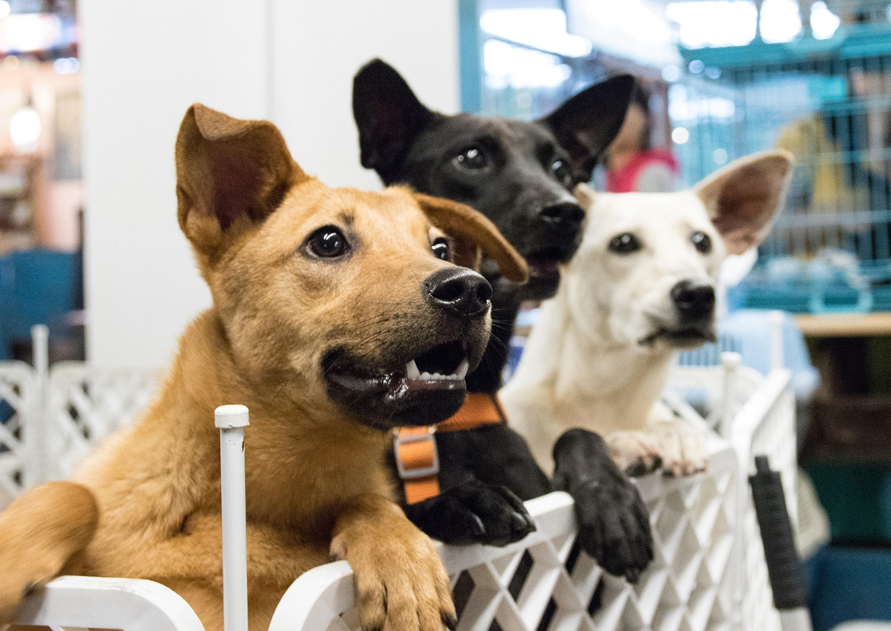

We are dedicated to rescuing and rehoming dogs in Nelspruit and surrounding areas. Our mission is to provide loving homes to dogs in need while educating the community about responsible pet ownership.
Every dog has right to have shelther,food and more❤️

Adopting a dog saves lives. Every year, countless dogs end up in shelters due to abandonment, neglect, or being lost. By adopting, you provide a loving home for a dog that would otherwise face uncertainty or worse.
Adopted dogs often bring immeasurable joy, companionship, and loyalty to their new families. They can also help children learn empathy and responsibility, and improve the overall well-being of adults through companionship.
When you adopt through Nelspruit Dog Adoption, every dog is carefully assessed, vaccinated, and socialized to ensure a smooth transition into your family.
We provide comprehensive support to both dogs and adopters:
If you're ready to give a dog a loving forever home, get in touch with us today. Your new best friend is waiting!
Contact Us